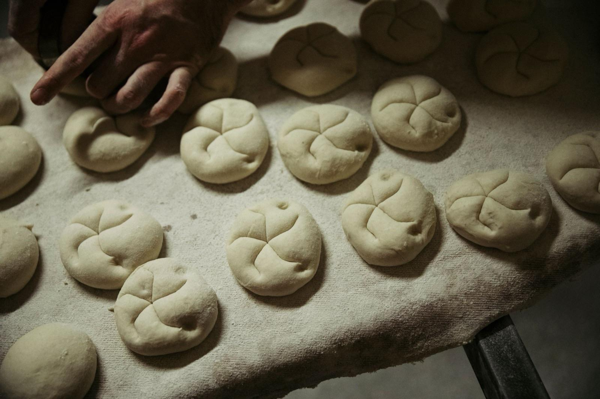
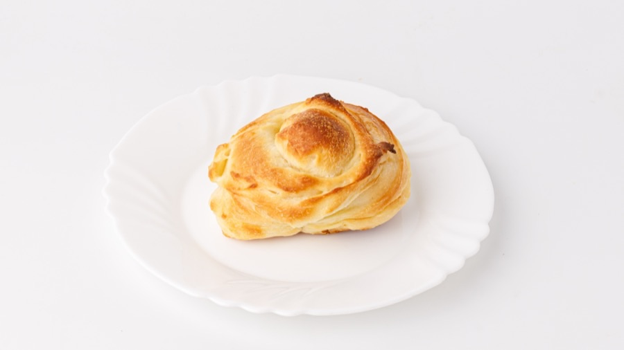

Sortiment
Was heute in der Auslage liegt
Alles täglich von Hand. Keine Tiefkühlteiglinge, keine Backvormischungen.
Brote
über Nacht gereift, morgens im Regal

RoggenmischbrotPublikumsliebling der Berliner Brotwahl 2026
VollkornbrotQuellstück, rund 16 Stunden
Weizen- und Mischbrotetäglich wechselnd
Spezialbrotenach Saison
Brötchen
auf Steinplatten gebacken, von Hand geschlungen

Ost-SchrippeDDR-Rezept, kompakt, krümelt kaum
Berliner Splitterbrötchensamstags oft vor Mittag weg
KörnersortenMohn, Sesam, Kürbis, Sonnenblume
CroissantsButter oder Würstchen
Käse- und Dinkelsprossenbrötchenfrisch von der Steinplatte
Belegte Brötchen und BaguettesMett, Ei, Käse, Salami, Schinken
Kuchen & Feingebäck
aus der eigenen Konditorei
Pfannkuchenvon Hand gespritzt, in siedendem Fett gebacken
Kameruner, SpritzkuchenFettgebäck wie vor 50 Jahren
Mohnzopfder Geheimtipp der Stammkunden
Streuselkuchen, Obstplunder, Apfelzimtschnecke
Bienenstich, Donauwellenach Originalrezept

Saisonal
Zu Weihnachten, Ostern und Silvester backen wir die Klassiker der Saison.
Torten auf Bestellung
Torten bestellen Sie telefonisch
030 44 57 576Di bis Fr 6:00 bis 18:30, Sa bis 13:30.